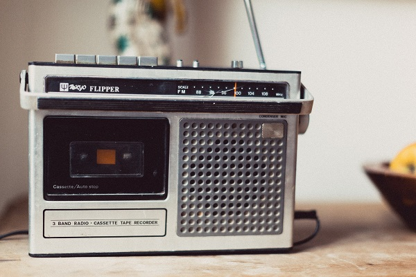
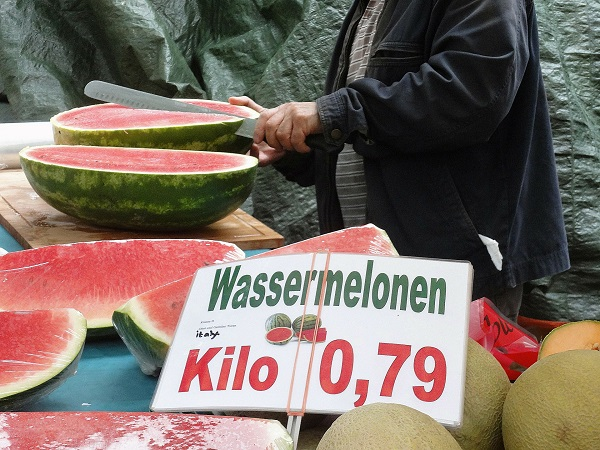
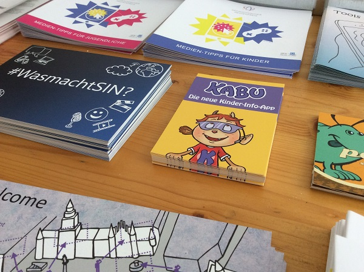
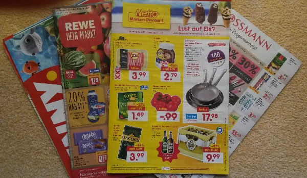
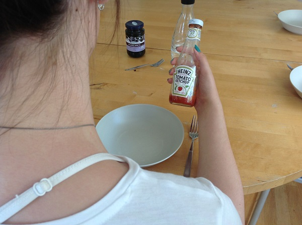
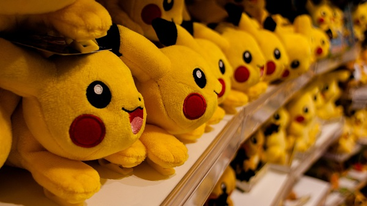

Werbung erreicht uns im Alltag an verschiedenen Orten und über unterschiedliche Medien.
Traditionelle Formen von Werbung sind:
- Zeitschriftenwerbung

- Fernsehwerbung
- Radiowerbung

Außerdem gibt es Hinweise und Werbung direkt am Verkaufsort. Darunter versteht man, wenn Kunden durch Produktproben oder Hinweistafeln auf Produkte aufmerksam gemacht werden.

Mit Werbung in Form von Plakaten (= Außenwerbung) wirst du häufig konfrontiert, wenn du in der Stadt unterwegs bist. Die Plakate kleben meistens in großen Formaten an Litfaßsäulen, U-Bahn-, Bus- oder Tramstationen oder sind in/auf öffentlichen Verkehrsmitteln angebracht.

Auch Flyer, die ein Produkt oder eine Veranstaltung bewerben, liegen an verschiedenen Orten aus, z.B. in Geschäften, im Kino, im Schwimmbad, in Vereinen etc. Oder sie werden dir direkt von sogenannten Promotern (= Flyerverteiler) in die Hand gedrückt.

Andere weitverbreitete Formen der Werbung sind Hauswurfsendungen (=Werbung im Briefkasten) oder Werbeprospekte.

Wenn du ins Kino gehst, fängt der Film nicht sofort an. Vorher läuft Werbung – meistens für Snacks, die man im Kino kaufen kann, oder Eigenwerbung für das Kino. Außerdem wird die Werbung von Marken gezeigt, die das Kino bezahlen, damit es ihre Spots abspielt.
Auch in einem Kinofilm selbst oder in einer Fernsehproduktion können Produkte beworben werden. Das nennt man dann Produktplatzierung. Dadurch wollen Marken ein möglichst großes Publikum erreichen und den Bekanntheitsgrad ihres Produktes steigern.

Außerdem sind da noch die Werbeformen „Sponsoring“ und „Merchandising“:
Beim Sponsoring unterstützt eine Marke eine Veranstaltung (wie z.B. einen sportlichen Wettkampf oder eine Konzertveranstaltung) finanziell, also mit Geld. Als Gegenleistung wird bei der Veranstaltung und auf dazugehörigen Produkten die Marke präsentiert.
Unter Merchandising versteht man die Vermarktung einer Veranstaltung oder von Medienfiguren. Das bedeutet, dass die Veranstaltung oder die Medienfiguren dazu genutzt werden, um darauf abgestimmte Produkte zu verkaufen. Oft werden T-Shirts oder andere Fanartikel (Rucksack, Tasse, Kissen, Schreibwaren etc.) hergestellt, die Bands, Sportvereine, Schauspieler, Stars oder Kinofiguren abbilden. Die Hersteller zielen darauf ab, dass das Publikum solche Produkte kauft, weil ihm die Medienfiguren sympathisch sind oder es sich gut mit der Veranstaltung identifizieren kann.
